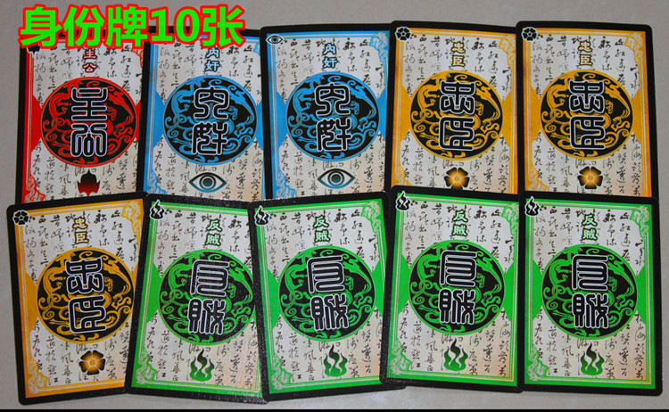
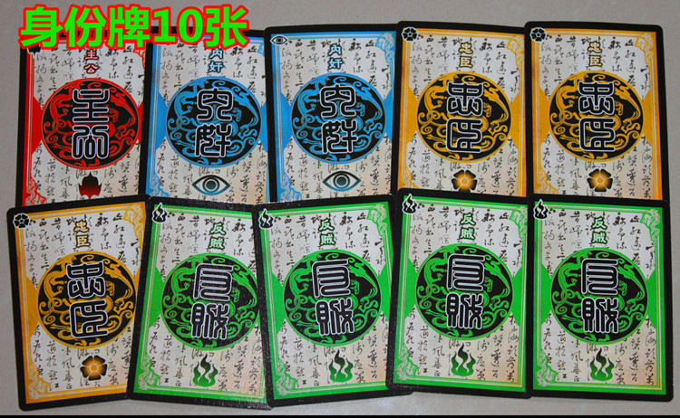

三国杀移动版玩法介绍
你即将开始一款集角色扮演、战斗、伪装等要素为一身的桌游。他就是——三国杀
基础规则
游戏配件
该版本共5个种类的牌
1. 身份牌
2. 武将牌
3. 体力牌
4. 游戏牌
以及以下配件：
1. 特殊牌标记物
2. 特殊指示物
准备开始
一、 决定身份
参照下表，准备与玩家数相同的身份牌
 
随机为每位玩家发放一张身份牌，主公立即亮出身份。其他玩家保存好自己的身份，不能被其他玩家知道
二、游戏目标
玩家的游戏目标由身份决定，具体目标如下：
1.主公：杀死所有反贼和内奸
2.忠臣：保护主公，胜利条件与主公相同
3.反贼：杀死主公
4.内奸：杀死除自己外所有人
一旦某一方的胜利条件达成，游戏结束
三、挑选武将
在初次接触三国杀时，可以不加入武将牌，直接开始游戏。
首先给拿到主公身份的玩家将标准包主公（刘备、孙权、曹操）和两张随机的武将牌，由其挑选一张，也可以直接给拿到主公身份的角色五张随机的武将牌。
当主公挑选好武将并展示后，将剩余的武将牌洗混，随机给每位玩家三张（10人局时每人两张），每人挑选一张扣置在自己面前，待所有玩家都挑选好后同时亮出，将其余的武将牌洗混，放置在一旁。
四、分发体力牌
拿取对应武将体力上限的体力牌，用武将牌盖住其左侧。
主公在其体力上限上再加一点（5人以上局）
若没有加入武将牌，每人视为四点体力上限，没有技能的武将。
五、分发起始手牌
将游戏牌洗混，发给每位玩家四张，作为起始手牌。
将其余游戏牌堆在中央，游戏开始。
进行游戏
进行游戏时，由主公开始，逆次进行。
每名玩家有一个自己的回合，一名玩家回合结束后，右手边玩家回合开始。每个回合有六个阶段：
1.准备阶段:有些技能可以在此阶段发动
2.判定阶段：若你的面前有延时类锦囊牌，你必须依次判定，并执行相应效果
3.摸牌阶段：你从牌堆顶摸两张牌
4.出牌阶段：你可以使用任意张牌，但必须遵循如下规则：
a.每个出牌阶段只能使用一张【杀】
b.任何一名角色的判定区里不能有两张同名的牌
5.弃牌阶段：在出牌阶段，不想出或没发出牌时，就进入弃牌阶段，将手牌数弃至当前体力值。
6.结束阶段：有些技能可以在此阶段发动。
角色死亡
当一名角色的体力降到0时，即进入濒死状态。除非自己或他人使用【桃】（或自己使用【酒】），否则该角色死亡。死亡的角色亮出身份牌，弃置区域内所有牌，然后执行奖惩：
1.任何一名角色杀死反贼，摸三张牌
2.若主公杀死忠臣，弃置区域内所有牌
游戏结束
当以下任意一种情况发生时，游戏结束：
1.主公死亡：此时若只有内奸存活，内奸获胜，否则反贼获胜
2.所有反贼和内奸死亡，主公和忠臣获胜